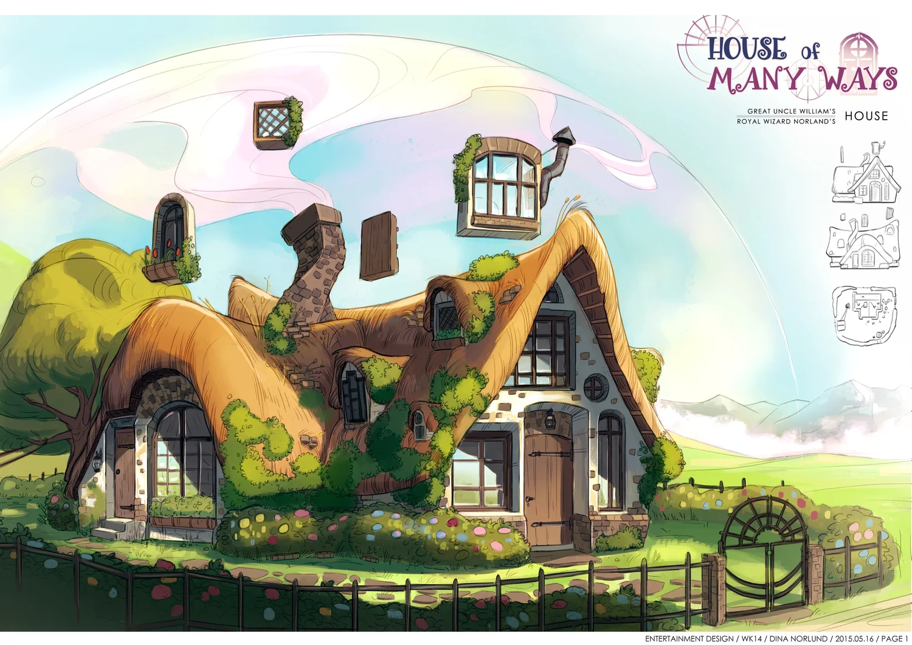
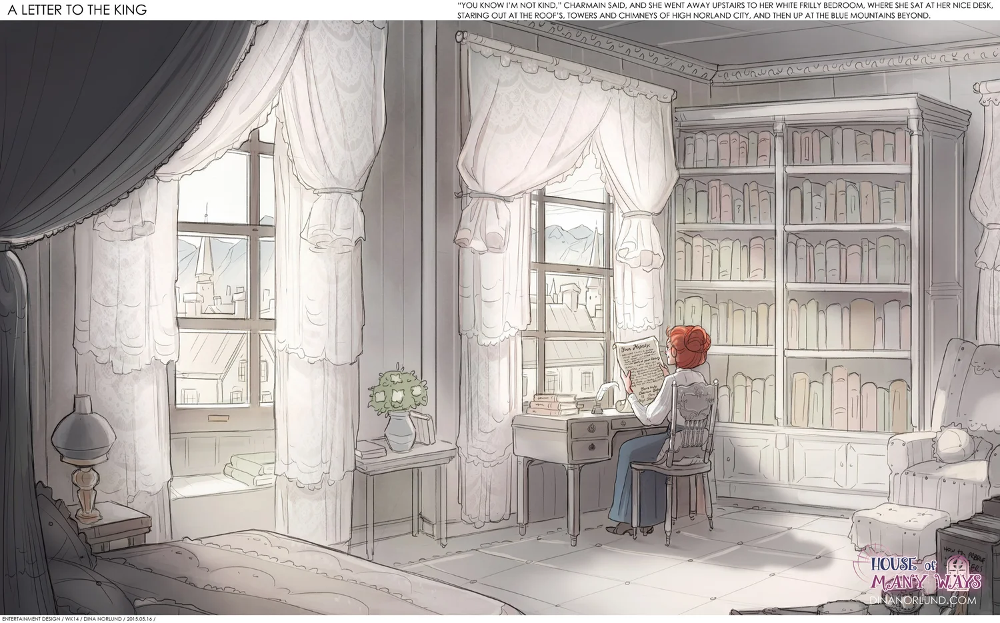
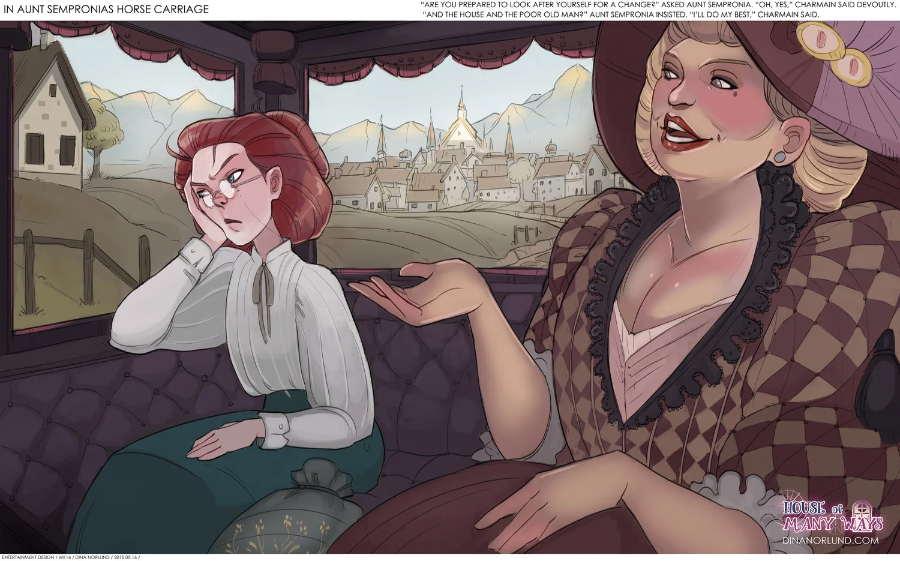
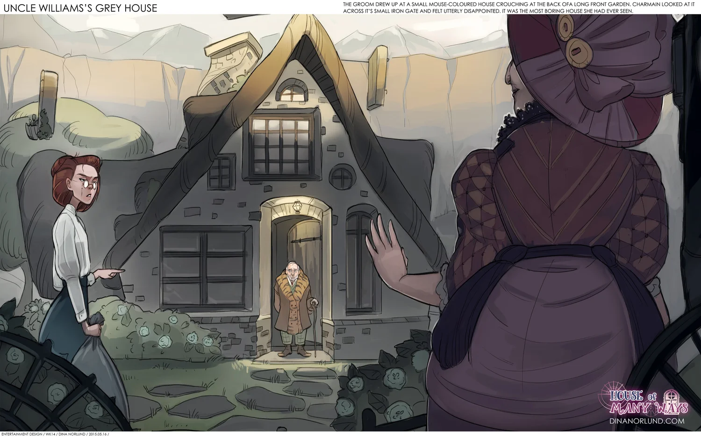
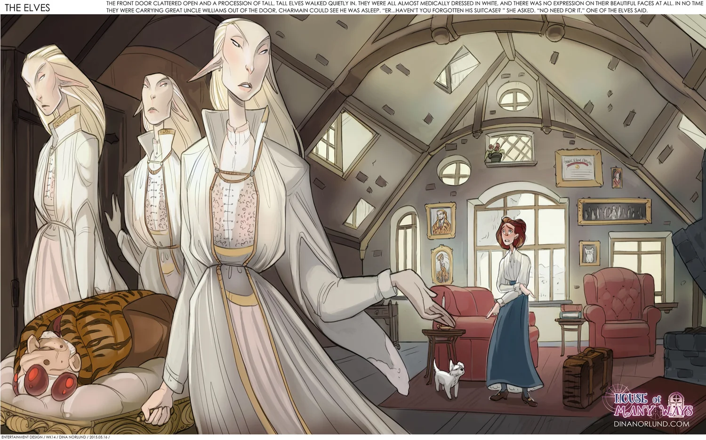
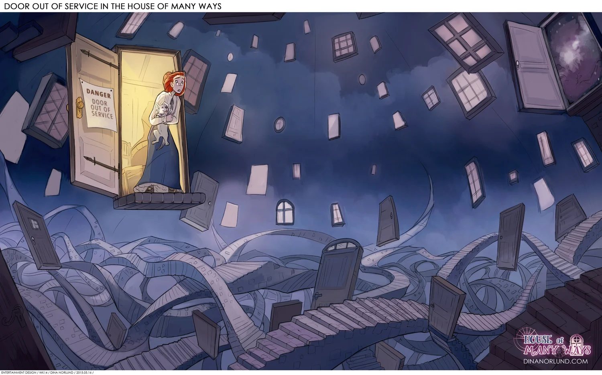
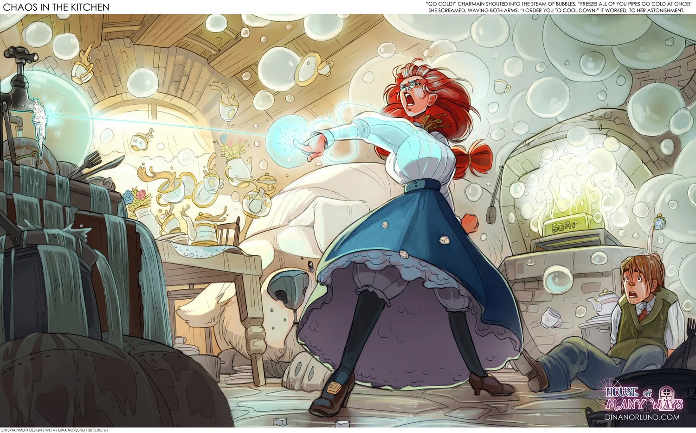
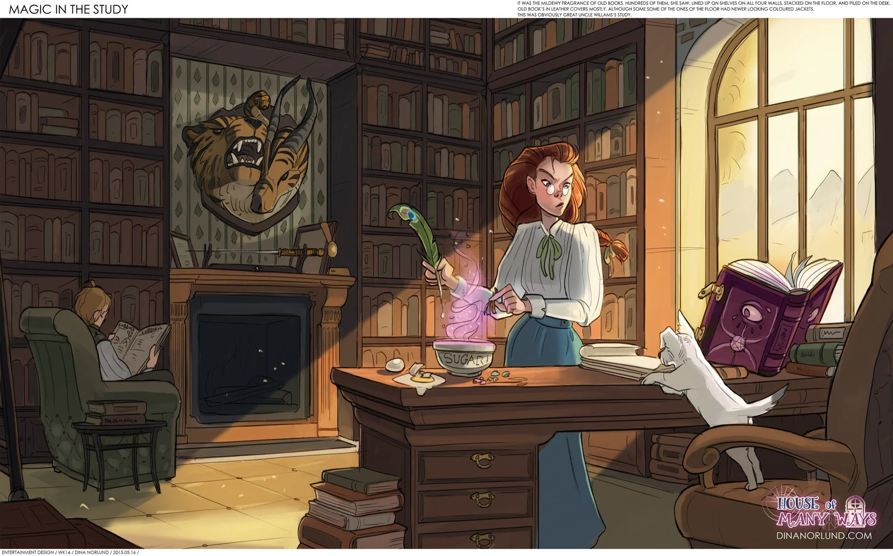

Esta historia comienza con Charmain Baker en su escritorio, rodeada de montones y montones de libros, sosteniendo una carta de su tía abuela (la tía Sempronia).

En esa carta se le pide que cuide la misteriosa casa de su tío abuelo William... Por lo que se monta en un carruaje para llegar allí, accompañada de tía Sempronia

Al llegar a la casa, Charmain conoce a su tío abuelo William.

Y poco después de irse tía Sempronia, unos extraños y altos elfos se llevan su abuelo, pues se encontraba enfermo.

Una vez sola y a cargo de la casa, se decide a cruzar la primera puerta, donde se encontró algo que no podía haber previsto.

¡Peligro!
"Puerta fuera de servicio"
Eso ponía en la puerta, que daba a un espacio desconocido lleno de un sinfín de puertas.
La cerró tan rápido como pudo, pues le preocupaba perderse para siempre en ese extraño lugar.
Al percatarse de que debería aprender magia para poder enfrentar los desafíos que le esperarían cuidando la casa, le pidió ayuda a su amigo Peter y comenzaron a aprender magia juntos.

Y tras un par de semanas de práctica, incluso descubrieron hechizos para preparar el desayuno.
